| 日付 | 2014年10月25日（土） |
|---|---|
| 山域 | 安蘇山塊 |
| メンバー | 家族（長女・3歳） |
| 山行形態 | 子連れ日帰り |
| アクセス | 車 |
| ルート (Map) | 浄因寺駐車場 (8:54) - (9:08) 浄因寺 - (10:03) 足利行道山 - (10:30) 剣ヶ峰 (11:05) - (11:37) 足利行道山 (11:44) - (12:15) 浄院寺 (12:23) - (12:35) 浄因寺駐車場 |
今週は久々に娘と2人で山に行くことにする。
できるだけ手軽に登れる山が良いと思い、足利行道山を選択。
栃木県にある山だが、高速ICから近くアクセスの良い山だ。
駐車場に到着。標高240m。
9時前ということもあって駐車場はガラガラだ。
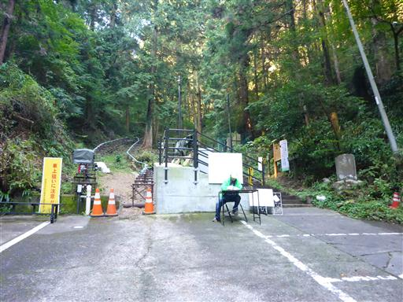
浄因寺の標識。「関東の高野山」とも呼ばれる、それなりに名のある寺のようだ。
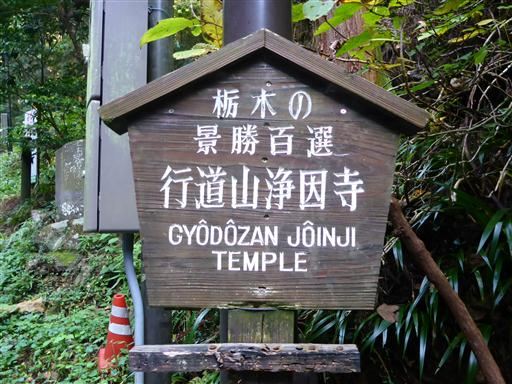
準備を整えたら登山開始。最初は元気いっぱいに石段を登っていく。
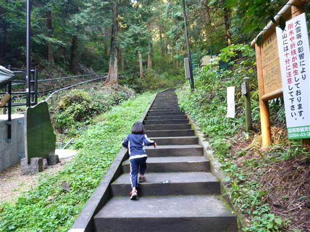
小さな池に金魚が住んでいる。冬でも大丈夫なのだろうか？
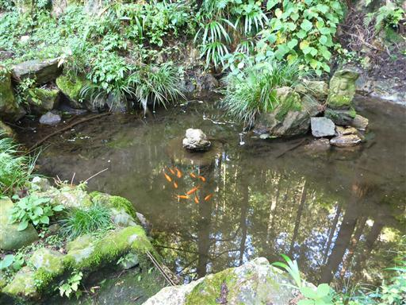
歴史のある寺だけあって、道端にはたくさんの石仏が並んでいる。

石仏に見守られながら、古びた階段を登っていく。
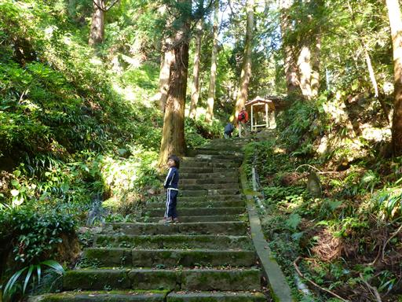
1つ目の山門を潜る。
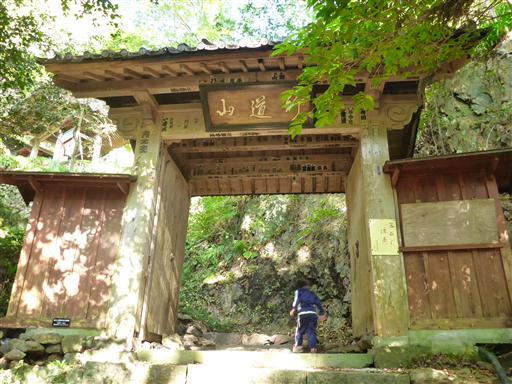
低い山だが、この辺りは崖が多く険しい地形だ。
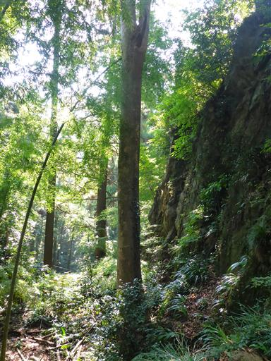
2つ目の山門。山門もかなり古いもののようだ。

建物が現れたところでトイレの標識があったので、寄っていく。
駐車場にはトイレがなかったので、ここにあるのは有難い。
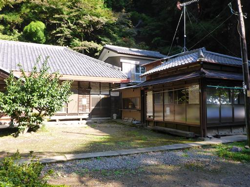
建物の側から続く細い階段を登る。
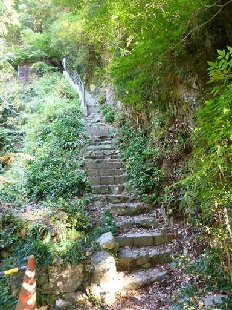
登りついた先に小さなお堂が建っている。
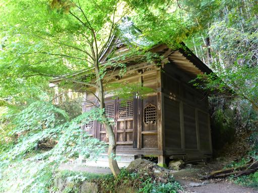
ふと下を見下ろすと先ほどの建物…
どうやら先ほどの建物が浄因寺だったようだが、それと気付かずに通り過ぎてしまった。
名高い寺のはずなのだが境内はずいぶんお粗末だ。
もう上まで来てしまったので帰りに見学することにする。
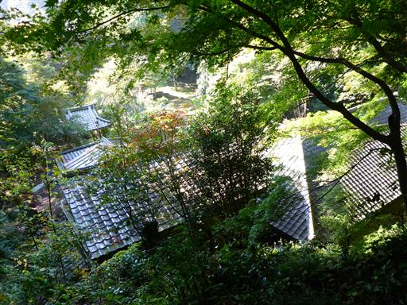
ここからだんだんと登山道らしくなってくる。
道は広く整備されているが、崖が多いので気は抜けない。
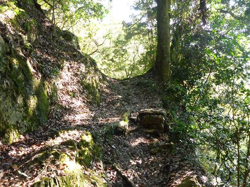
墓が並んでいる場所に到着する。
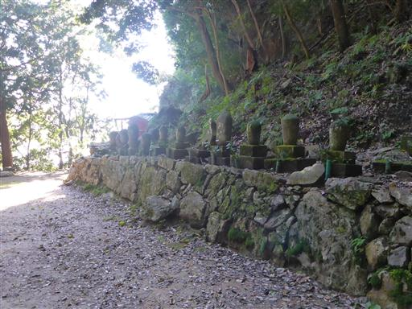
奥に小さな祠が祀られている。その背後は絶壁だ。
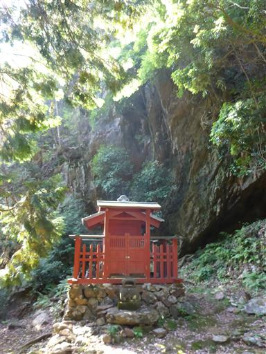
登山道をさらに進むと寝釈迦仏が祀られている。
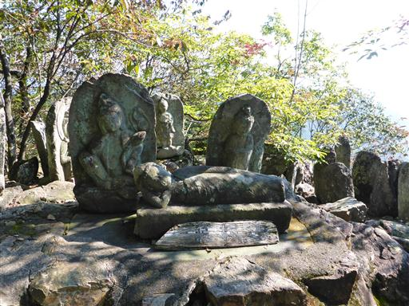
ここからは本日初めての展望が開ける。見えるのは辺りの低い山々だ。
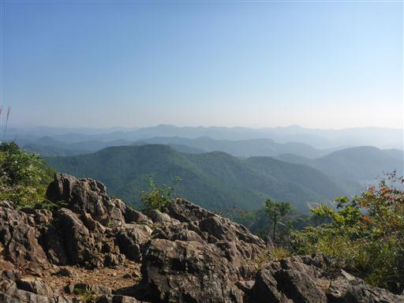
ここから先は明瞭な尾根道になる。急峻な地形もなくなり安心して歩ける。
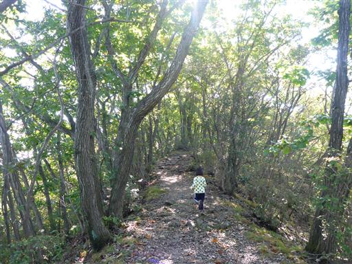
しばらく尾根道を歩くと足利行道山に到着する。標高442m。
山頂には東屋が建っている。
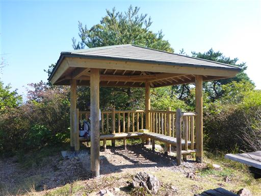
山頂からはそこそこ展望が開ける。
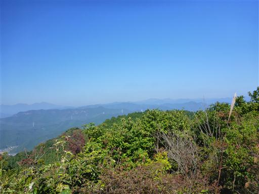
赤城山がよく見えている。本日は快晴だが、少々霞んでいるのが残念だ。
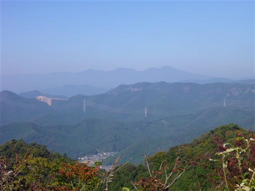
まだお昼には早いので、先にある剣ヶ峰を目指す。
ここから先は気持ちの良い尾根道だ。
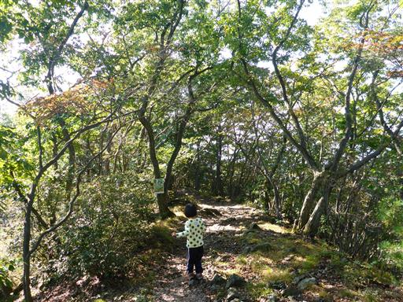
剣ヶ峰に到着。残念ながら展望のないピークだが、ここで昼食をとることにする。
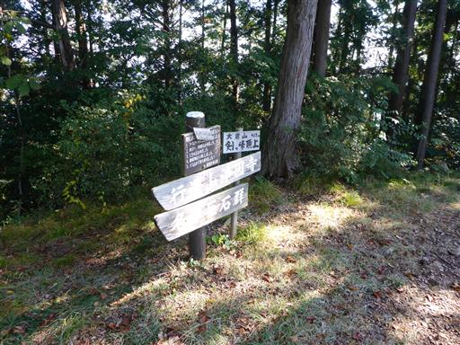
足利百名山の標識。足利市に百個も山があるのだろうか？
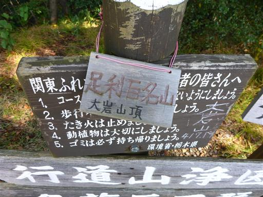
檜の実が地面に落ちていたので、実がなっているところを娘と探してみると見つかった。
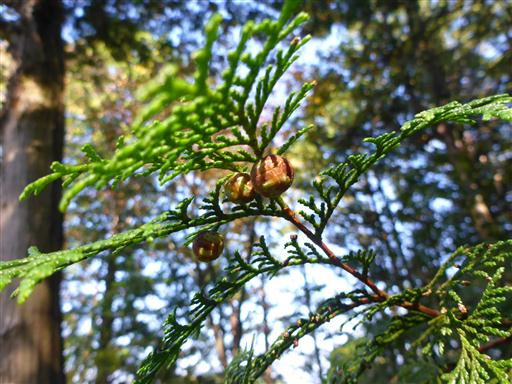
下山時に改めて浄因寺を見学する。良く見ると確かに寺だ。
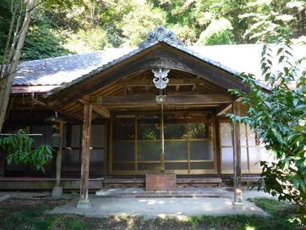
境内に太った猫がうろついている。
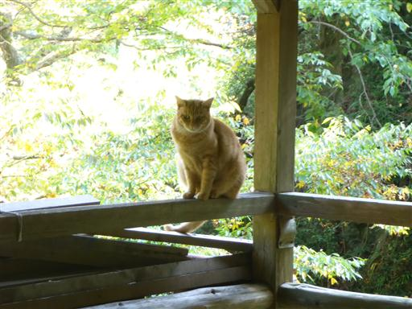
岩の上に橋が架かっていて、その先の断崖に建物が建っている。
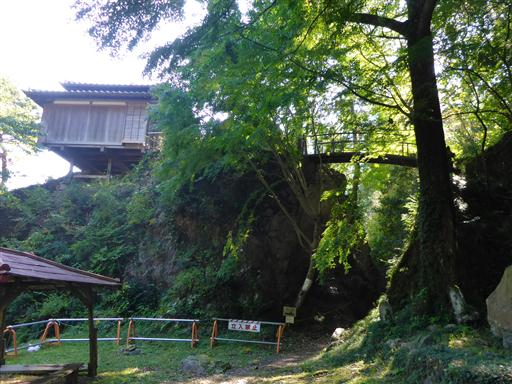
気になる存在だが、残念ながら立入禁止のようだ。
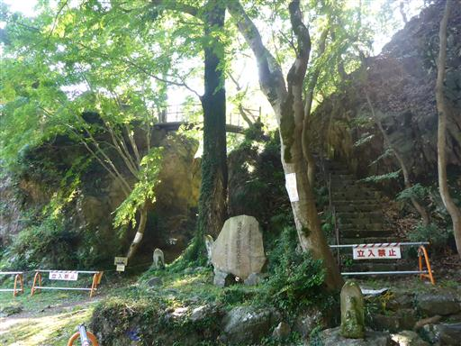
再びトイレに寄る。駐車場からここまではモノレールが通じている。最近有料化されたらしい。
歩いてもわずかな距離だし、こんなものを用意するほど観光客が来るのか少々疑問だ。
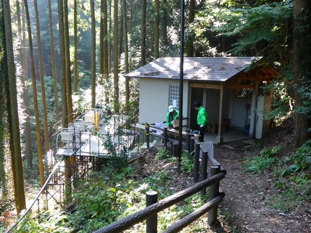
あとは下るのみ。古い山門の屋根には落ち葉が積もっている。
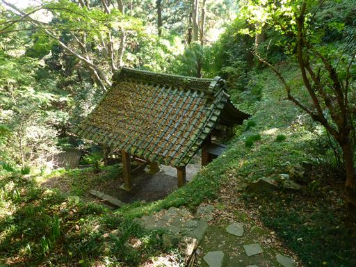
石仏も古く、苔生している。昔は賑わった寺だったのだろう。
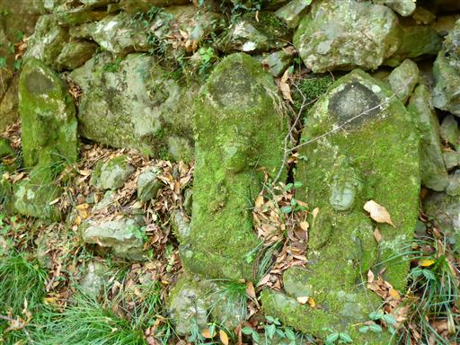
駐車場近くの東屋で休憩していると、意外にもモノレールに乗った人たちが上っていく。
娘がいたので手を振ってくれた。
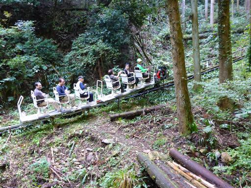
駐車場に下山する。
今回、山にいたのはほとんど地元の人ばかりのようだった。
娘でも物足りないくらいのあっさりハイキングだった。
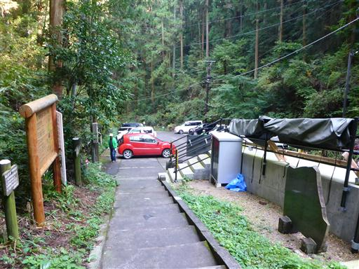